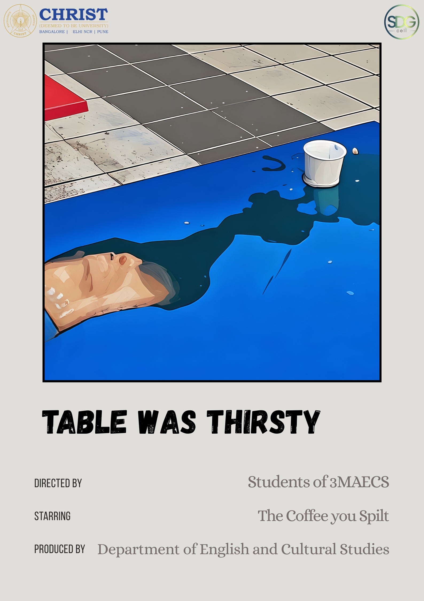
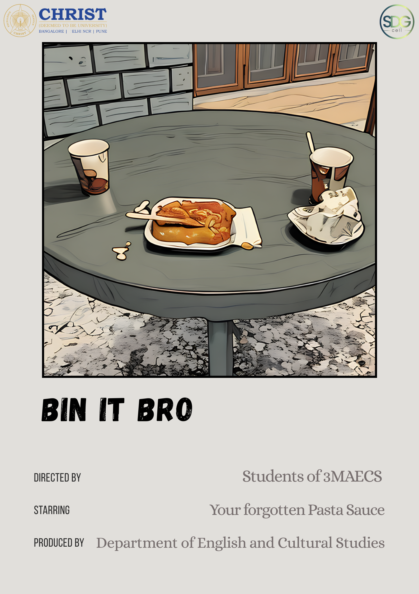
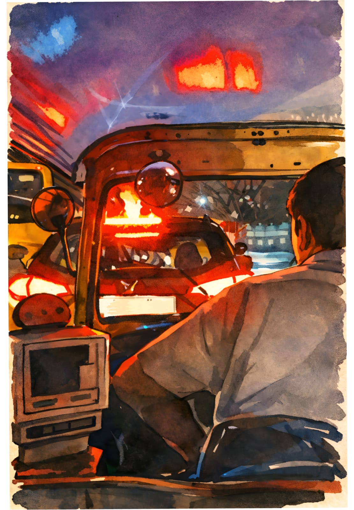

A creative writer who sometimes likes to doodle.
Essays on attention, neutrality, and the social texture of feeling.
Recent writing
SUBSTACK →
Recognition Before Experience
What appears as quick thinking is often pre-structured recognition. When a new instance appears, it does not arrive as entirely new. It arrives already legible.
This is where morality begins to function as reaction time. The interval between seeing and deciding collapses. The question is no longer what is happening here? but which known pattern does this belong to?